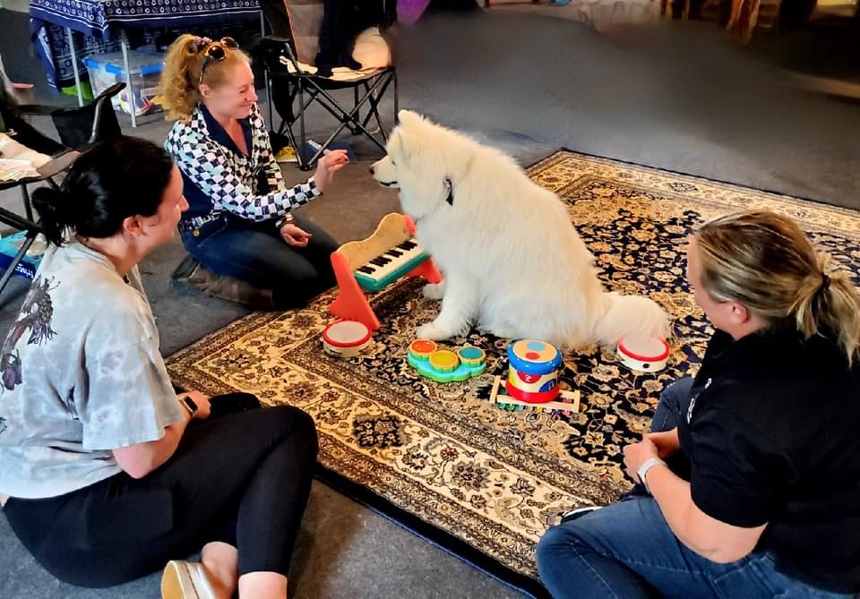

Services
Individual Talk Therapy
Redefine your relationship with yourself! In therapy, you can express yourself in a judgment-free environment where you can work through any issue or challenge. I utilise a flexible approach rooted in attachment-based therapy, as well as techniques borrowed from ACT, CBT, DBT, somatic therapy, and play therapy. I have experience working with a wide array of mental health diagnoses and concerns, and I specialise in working with struggles related to trauma, personality disorders, ADHD, LGBTQIA+ and gender identities, chronic pain, and poly/ENM identities.
All individual sessions last 50–60 minutes. Intake session costs $200, all follow-up sessions cost $185 per session.
Couples Therapy
Relationships are hard. I am here to help you reclaim joy! Whether your relationship is not as strong as you would like, you are navigating one or both partners' mental health struggles, you are exploring or practicing polyamory/ethical non-monogamy, you are preparing for a life-transition together, or you simply want to strengthen an already happy bond, I am here to help. I utilise emotionally-focused couples therapy to increase emotional intimacy, build strong and healthy attachment, and improve communication.
All couples sessions last 75–90 minutes. Sessions cost $250 per session.
Animal-Assisted Play Therapy®
For younger children, traditional talk therapy is difficult as they don't always have the words to communicate what they are experiencing. Play is their way of communicating. Animal-Assisted Play Therapy® (AAPT) is the intersection of animal-assisted therapy and play therapy. It involves incorporating a trained animal into a play therapy session, where the animal serves as a co-facilitator by engaging the therapeutic powers of play. This can look like playing games involving the animal, teaching tricks, creating art and music with the animal, and so much more. In AAPT sessions, you can always be assured the animal is not just present but is actively enjoying being a part of the session!
At this time, Alana offers canine-assisted play therapy with Eir. She has previously offered equine-assisted therapy.
All sessions last 40–60 minutes, depending on the child's tolerance and needs. Intake session costs $200, all follow-up sessions cost $185 per session.

Eir is often, but not always, present for in-person sessions. She is hypoallergenic and certified as a therapy dog. If you have any concerns or questions, please let me know!